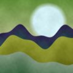
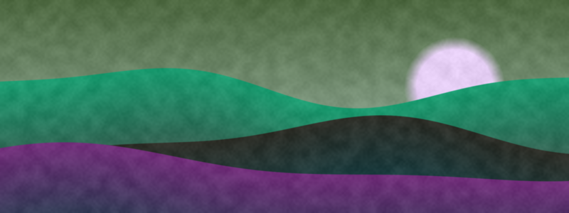
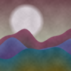
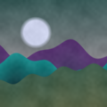

Marco Vidal2 h · Dolomites
Made it to the hut before the clouds came in. The last hour was all switchbacks, but the view at the top was worth every step.

214 likes31 commentsShare

Lena K.
Made it to the hut before the clouds came in. The last hour was all switchbacks, but the view at the top was worth every step.


Who is in for the sunrise paddle on Saturday? Meeting at the north pier at 6:15, boats are booked for eight people.